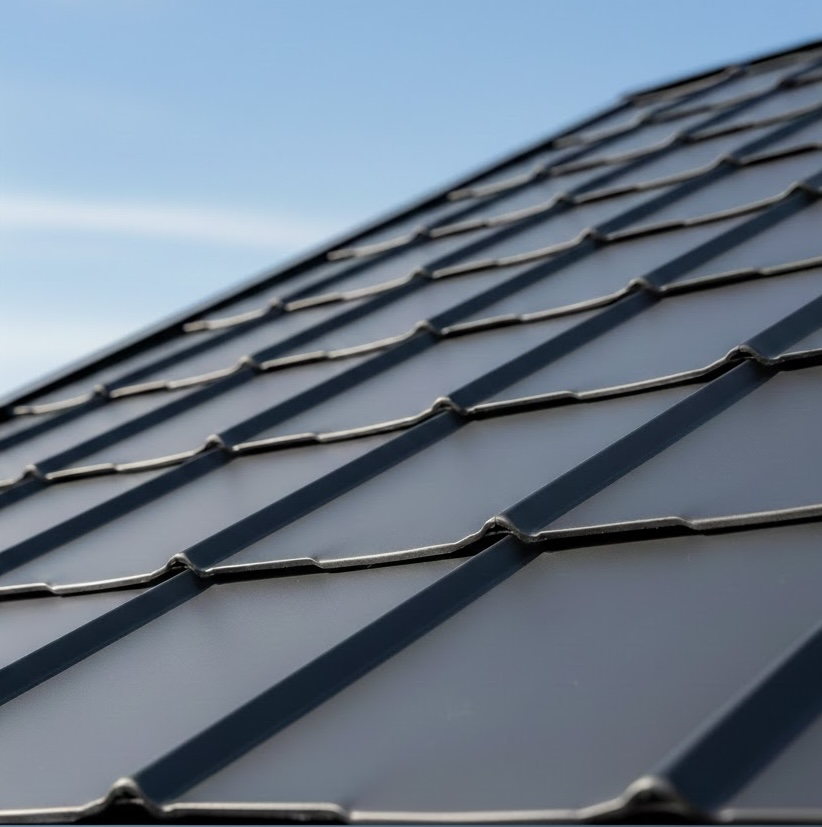

.png)
Takpannplåt som smälter in
En plåtlösning utformad för att följa takets naturliga formspråk. Resultatet är ett lugnt, enhetligt uttryck utan skarpa brytningar – med den hållbarhet som bara plåt kan erbjuda.
Se skillnaden direkt
Sömlös harmoni –
inte bara ett tak
Dra i reglaget och upplev hur takpannplåt förvandlar hela husets uttryck. Samma konstruktion – helt ny känsla.

Nyfiken på hur ditt tak kan se ut?
Boka kostnadsfri inspektionTakpannplåt
med trygghetsgaranti
Vi levererar inte bara ett tak, vi levererar sinnesro. Certifierade montörer, fast pris utan dolda kostnader och garanti som faktiskt gäller.

Certifierade montörer
Våra montörer är certifierade och utbildade för sina uppdrag, och vi arbetar enligt beprövade metoder för att leverera ett tryggt och hållbart resultat.
Fast pris – inga överraskningar
Du får ett tydligt och fast pris redan vid offerten. Inga dolda tillägg, inga efterfakturor. Det du ser är det du betalar.
Garanti som faktiskt gäller
Vi ger garanti på både material och arbete. Skulle något uppstå står vi alltid vid din sida. Ingen krångel, ingen väntan.
Takmaterial
i jämförelse
Varje takmaterial har sina styrkor. Här presenterar vi fakta och egenskaper så att du kan göra ett välgrundat val.
Livslängd
Stålkärna med polymerbeläggning som inte åldras som traditionella material.
Beprövat och pålitligt. Kan bli porösa med tiden men håller länge med rätt underhåll.
Prisvärt och funktionellt. Kräver omlägning efter ca 15–25 år beroende på kvalitet.
Vikt per m²
Extremt lätt — belastar inte takstolen. Perfekt vid renovering av äldre hus.
Tung och stabil. Kräver att takstolen dimensioneras för vikten.
Lätt material som fungerar på de flesta takkonstruktioner utan förstärkning.
Underhåll
Slät yta som inte samlar mossa. Behöver sällan mer än en visuell kontroll.
Mossa och lav kan växa på ytan. Spruckna pannor bör bytas ut vid behov.
Skarvar och fogar behöver inspekteras. Känsligare för mekanisk påverkan.
Klimattålighet
Hanterar snölast, hagel och kraftig vind utan problem. Slät yta låter snö glida av.
God klimattålighet. Tål snö bra men kan spricka vid kraftiga temperaturväxlingar.
Fungerar väl i normalt klimat. Extra känsligt vid stående vatten och extrem kyla.
Estetik
Ser ut som traditionell takpanna men i en modern, enhetlig yta. Finns i flera färger.
Det mest traditionella utseendet. Tidlöst och uppskattat av många villaägare.
Mer diskret utseende. Passar bra för garage, förråd och byggnader med låg lutning.
Prisläge
Högre startkostnad men lägre totalkostnad över tid tack vare minimal skötsel och lång livslängd.
Konkurrenskraftigt pris. Beprövat val som balanserar kostnad och kvalitet väl.
Lägst materialkostnad. Bra alternativ för budgetmedvetna projekt och tillbyggnader.
Alla takmaterial har sina användningsområden. Takpannplåt utmärker sig genom sin kombination av låg vikt, lång livslängd och minimalt underhåll — egenskaper som gör det till ett starkt alternativ för den som vill ha ett tak som håller länge.
Utforska ditt tak
Klicka på de olika lagren för att se hur ett takpannplåt-tak är uppbyggt — från nock till takfot.
Klicka på ett lager för att läsa mer
Takpannplåt
Det yttersta skiktet som skyddar mot väder och vind. Profilerad stålplåt som efterliknar klassiska takpannor — men utan vikten. Färgbeständig och korrosionsskyddad i upp till 40 år.
Bärläkt & ströläkt
Horisontella bärläkt ger fäste för takpanneplåten, vertikala ströläkt skapar ventilationsspalten. Tillsammans bildar de ett rutnät som säkrar plåtens infästning och luftcirkulation under taket.
Ventilationsspalt
Luftspalten mellan underlagspapp och läkt är avgörande. Den ventilerar bort fukt, förhindrar kondens och förlänger takets livslängd avsevärt. Luft strömmar in vid takfoten och ut vid nocken.
Underlagspapp
Diffusionsöppen duk som släpper igenom fukt inifrån men stoppar vatten utifrån. Fungerar som ett extra skydd under läkten och säkrar täthet vid eventuellt kondens.
Råspont
Spontade granbrädor som bildar ett stabilt, sammanhängande underlag för underlagspappen. Råsponten ger taket struktur och stöd, och skapar en plan yta att fästa tätskiktet på.
Takstol
Bärande konstruktion som fördelar takets vikt ned till väggarna. Vid byte till takpannplåt behöver takstolen sällan förstärkas tack vare materialets låga vikt — en stor fördel vid renovering.
Redo att börja?
Ditt nya tak är ett samtal bort
Vi hjälper dig med allt från rådgivning och offert till ett färdigt takpannplåt-tak. Kontakta oss idag för en kostnadsfri konsultation.
Kontakta oss